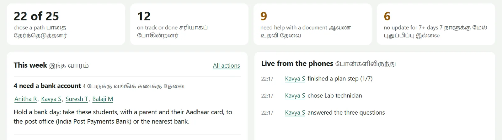
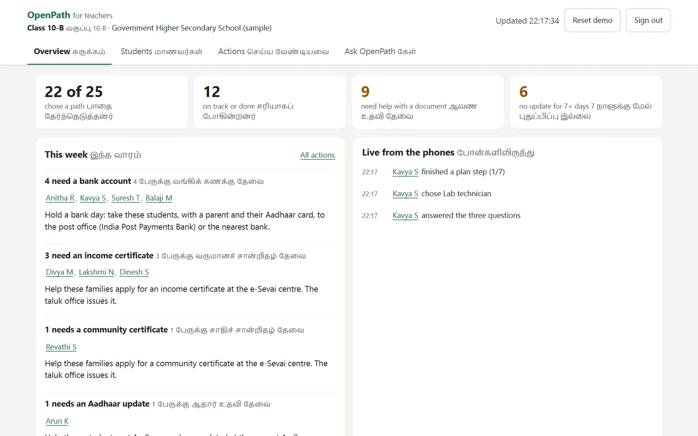
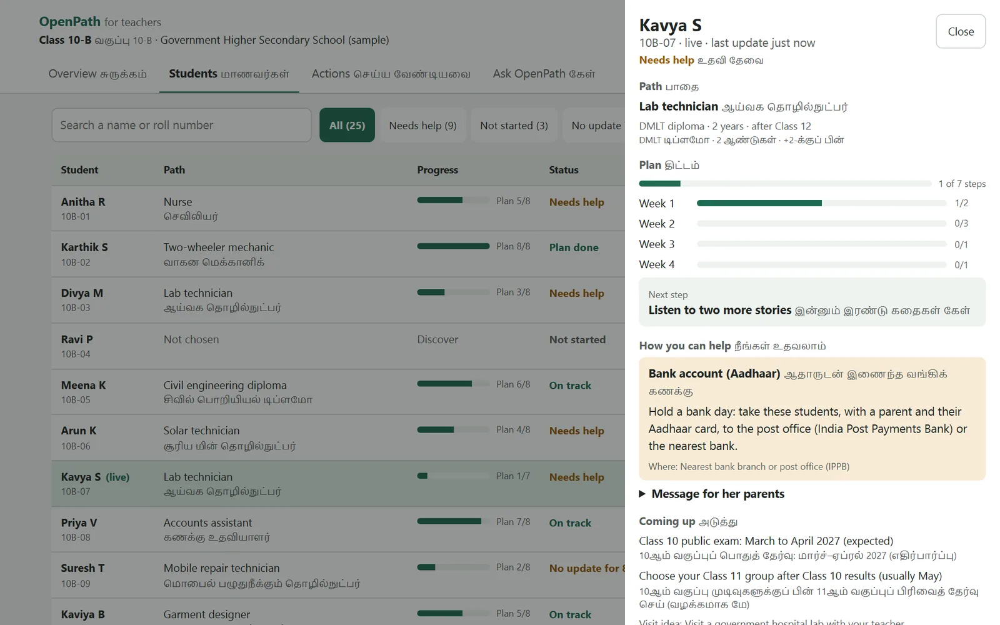
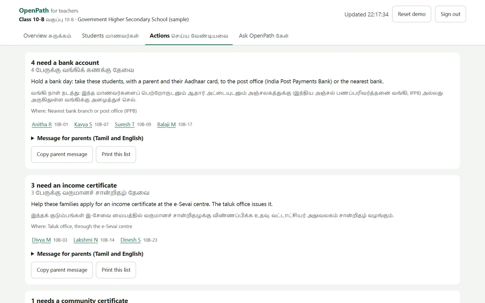
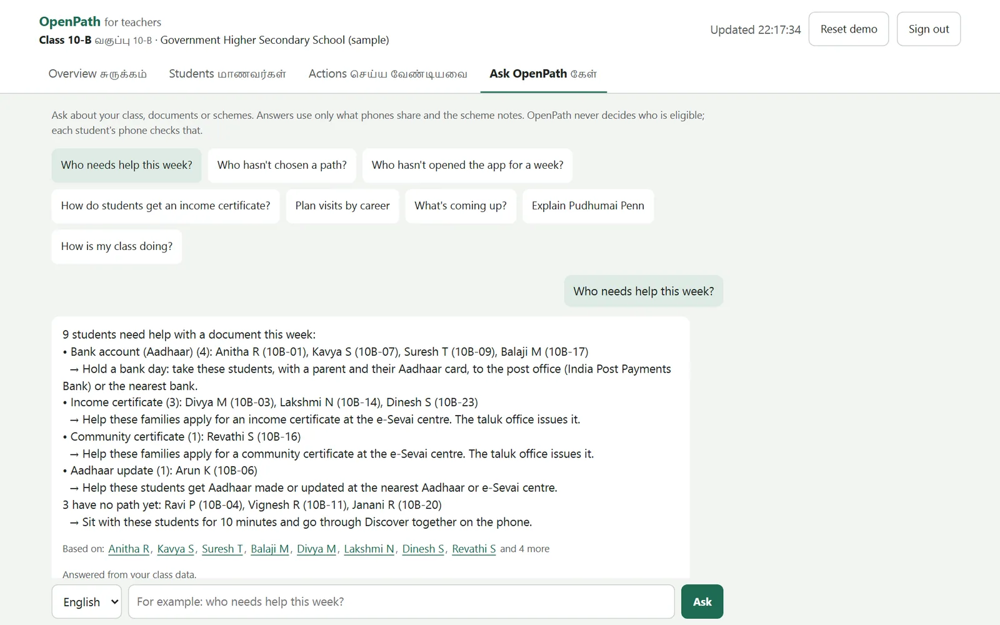

Live from the phones போன்களிலிருந்து நேரடியாக
Four numbers tell you where the class stands. Below them, this week's blockers with names, and each student's update a few seconds after her phone finds a signal.

For class teachers of Classes 9 to 12 in Tamil Nadu
யாருக்கு உதவி தேவை, இந்த வாரம் என்ன செய்வது என்று ஒரே இடத்தில் பாருங்கள்
Your students get a career and scheme guide in Tamil that works without a signal. You see the path each student chose, how far she has got and the one thing blocking her, straight from her phone. Her community, income and answers never leave it.
Demo: Class 10-B, a government higher secondary school, with 25 sample students.

Four numbers tell you where the class stands. Below them, this week's blockers with names, and each student's update a few seconds after her phone finds a signal.

Open any student to see her path, her plan week by week, her next step, how you can help with her blocker, and a message for her parents in Tamil and English.

One card per blocker: who needs a bank account, an income certificate or a path. Each card says what to do and where. Print the list for the post office or e-Sevai, or copy the parent message into WhatsApp.

Ask in Tamil or English: who needs help, how to get an income certificate, what a scheme requires. Answers come from your class and the scheme rules, with sources. It never decides who is eligible; each student's phone checks that.

Ask OpenPath refuses to list or count students by caste, income or gender. Its AI sees roll numbers, never names.
The class code is given to the class teacher.
OpenPath for teachers
Class 10-B வகுப்பு 10-B · Government Higher Secondary School (sample)
Ask about your class, documents or schemes. Answers use only what phones share and the scheme notes. OpenPath never decides who is eligible; each student's phone checks that.